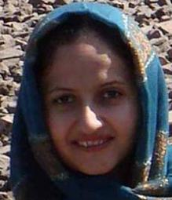

پذيرش > سایت نوشته ها > بومی سازی جنسیتی
 تحدید زنان، از خانه تا دانشگاه تحدید زنان، از خانه تا دانشگاه

 بومی سازی جنسیتی بومی سازی جنسیتی
27 آبان 1387 - نجمه معصومی - نسخه قابل چاپ
بومی سازی جنسیتی محتوای لایحه ای که قرار است مجلس آن را به رای بگذارد.لایحه ای که نمی توان جایگاهی نسبت بدان یافت برای نگریستن به عدالت.
ورود خیل عظیم نسوان به دانشگاه طی سالهای اخیر واکنش های متفاوتی در پی داشته اعم از طرح های سهمیه بندی جنسیتی که متاسفانه باوجود مخالفت ها ی بسیار دور از چشم نیست، و امروز بحث از بومی سازی جنسیتی که تبدیل به یک نگرانی جدید شده است. جمعیت عظیم دختران ورودی آموزش عالی از یک طرف، نارسایی خوابگاهها، مسایل رفاهی و امنیتی نیز از طرف دیگر سبب شده تا آنها که مسولیتی را با خود به یدک می کشند برای جبران این عدم مدیریت و به قولی پاک کردن صورت مساله به جای حل آن به سبب طرح این لایحه و حمایت از آن شتافته اند غافل از اینکه تبعات بلندمدت چنین طرحی می تواند بر جامعه ایرانی گذازد مخربتر و پرهزینه تر از اثرات این عدم مدیریتی است که اکنون با آن مواجه ایم.
باید بپذیریم اجتماعی که بیش از ۶۰ درصد فضای آکادمیک اش را زنان تشکیل می دهند خواه نا خواه با فضای اجتماعی،سیاسی،فرهنگی،اقتصادی ای مواجه خواهد شد که بسیاری از فارغ التحصیلان دانشگاهها را در خود جای می دهد.یعنی ۵ یا ۶ سال آینده ایران باید آماده باشد برای حضور پررنگ بانوان .بانوانی که از هزینه های عمومی استفاده نموده اند برای تحصیل و نسبت به خود و جامعه وظیفه دارند در ازای علم کسب شده خدمت کنند.
متاسفانه، نگاه سنتی و پدر سالار جامعه ایرانی و همچنین هدف گیری اشتباه خانوار ها و مسولین که برای حفظ امنیت غالبا تیرشان دختران را نشانه می رود فضایی ساخته اند برای دختری که آماده حضور در اجتماع می شود که همگام با ورود به دانشگاه و خروج از خانواده آن هم تازه در سن ۱۹-۱۸ سالگی می آموزد که گام اول را در جهت حفظ استقلال خود و حضور و تلاش به کار گیرد و به واکاوی شخصیت اجتماعی خود برخیزد و در این میانه است که او آنچنان که آموخته محافظه کارانه گام بر می دارد.مگر…
جوانی که نیرو و انرژی فراوان دارد و می بایست در جهت شناخت آنها با توجه به علایق خود گام بردارد و آنها را در جهت رشد و توسعه به عرصه بگذارد. این خروج آگاهاننه و هدفنمد (رفتن جهت کسب دانش) سبب خواهد شد تا وی از روزمرگی هایی که طبیعت زندگی یک زن محسوب می شود خارج شده و بر پای خود بایستد،مسول زندگی خود باشد و برای اولین بار به برنامه ریزی اقتصادی زندگی خود بیاندیشد.و در کل آگاهانه تر به اطراف بنگرد.اینگونه درها باز است تا او بیاموزد .
لیکن متاسفانه طرح بومی سازی جنسیتی تحمیلی اجتماعی محسوب می شودتا دختران در خانه بمانند و همچنان عضوی از حوزه خصوصی به حساب آیند.و در نتیجه نگرانی ها و حمایت های خارج از حد خانواده را برای رشد و یافتن شخصیت متکی به نفس پشت سر نگذارند. این جرات را از آنان خواهد گرفت و حتی انگیزه ای به آنان نمی دهد تا در پی آگاهی برآیند تا مستقل شوند تا بدانند چگونه می شود از روزمرگی ها رها شد و در جهت کسب موقعیت اجتماعی حقیقی خود برآیند در خانه می مانند بدون هیچ گونه تجربه ای، تجربه ای که بدون تردید خانوارها خود را موظف می دانند فرزند مذکرشان را برای ورود به جامعه درجهت اکتساب اش تشویق کنند.
نا گفته نماند محسناتی نیز بر این طرح می گذرد که ذکر می شود: ۱- برای آنها که تا به امروز عادت کرده اند تنها با مردان سرو کله بزنند و تصمیمات کلانشان را خودشان و بر اساس منافع مردانه خود بگیرند آنچنان که تا کنون مانع تراشی ها و ایرادات شان در عرصه جامعه واکنشی در پی داشته که شرایط امروز را حاکم گشته، خفتن نیمی از جمعیت در سهولت امورشان بی تاثیر نیست. چرا که امروز خودشان بر مسند قدرت اند و مدیریت. برایشان کابوسی بیش نیست مشارکت زنان در عرصه های کشوری.
۲- نکته مثبت دیگر شامل حال پدران و مادرانی وسواس می شود که فقط نگرانند دخترشان آسیبی نبیند و به قول خودشان نجیب و معصوم به خانه بخت رود.البته از آن طرف هم پسرشان هرکجا که می خواهد می رود و می کند هرکار که می خواهد چون جوان است!!
۳- و آخرین نکته شامل حال نیروهای امنیتی و طرحهای امنیت اجتماعی می گردد طرحهایی که مجرمین اصلی آن دخترانند نه آنها که بیکارند و چشم چران !خیالشان راحت می شود که لااقل چهار سال دیگر مجرمینشان تحت نظارت خانواده اند و کمتر خطا می کنند.غافل از آنکه اگر خطایی هست معطوف به یک نفر یا یک قشر یا یک جنسیت نیست.همه جامعه در به وجود آمدن آن مقصر است هر دو جنس شریک جرم اند!! ولی آبرویی که می رود و آسیبی که می بیند و محرومیتی که تحمیل می شود شامل حال یک جنس می شود و بس! این کجای عدالت است؟؟ باز هم پاک کردن صورت مساله.
بومی گزینی جنسیتی عدالت را در تنها رقابتی که کمترین شائبه در اعمال خطا دارد زیر سوال می بردرقابتی که دختر و پسر ندارد.همه با هم با سهم مساوی بر اساس شایستگی و اثبات توانایی خود تلاش می کنند.و منتظر ثمره آن هستند.
با وجود کمبود امکانات و تجمع آنها در یکی دو شهر تلاش بی معنی می شود و رقابت هیچ.تلاش برای بدست آوردن کرسی دانشگاههای بزرگ چون دانشگاههای تهران، اصفهان، شیراز، تبریز و… به سخره گرفته خواهد شد. آنچنان که امسال هم به گونه ای شاهد این وضعیت بودیم.تا آنجا که اعتراض اساتید دانشگاهها را در پی داشت. اساتیدی که کم ترپیش می آید اعتراض خود را بیان کنند!نمونه بارزآن پذیرفته شدن رتبه ۱۶۰۰۰ در برق شریف در حالی که رتبه های ۹۰،۲۰۰ و …. سرشان بی کلاه ماند و پشت درهای بسته دانشگاه به سماق مکیدن دعوت شدند.سیستم آموزش عالی با تخصیص منابع برای توانایی های مختلف دانشجو می پذیرد و موظف است در جهت بروز و توانایی دانشجویان تلاش کند.حال باید دید دانشجویی با رتبه ۱۶۰۰۰ اصلا می تواند خود را با شرایط رتیه های ۱ رقمی و دو رقمی هم کلاسی وفق دهد؟و آیا اصلا می تواند انتظارات اساتیدی که در هر حال خود را آماده کرده اند که در بالاترین سطح تدریس کنند پاسخ گوید؟ بسیار مشاهده شده حتی برای آنها که با رتبه های عالی وارد دانشگاه شده اند،بریده اند و توان ادامه نداشته اند. افسردگی، اعتیاد، و گاهی موارد خودکشی هایی که از دانشجویان چنین دانشگاههایی مشاهده می شود دلیل بر عدم توانایی فرد به پاسخگویی سوالات مذکور داشته! و اینک ما به سمتی می رویم که تعدادی بیشتر با توانایی هایی کمتر را به این سو هدایت کنیم.وشاید هم منجر به این شود که سطح علمی چنین دانشگاههایی هم با توجه به نیاز دانشجویانش تقلیل یابد.
این امر اتلاف انرژی و توان جوانان را در پی خواهد داشت .جوانانی که حق دارند با توجه به شایستگی هاشان از حداقل امکانات این مملکت بهره برند.
نمی دانم طرح بومی سازی جنسیتی همچون طرح لایحه حمایت از خانواده که چندی پیش مطرح شد از ذهن چه کسانی بر روی کاغذ ترسیم شده؟ می توان با هزینه ای کمتر هم عدالت را برقرار کرد، هم امنیت را هم رفاه جامعه را.
امروز محققین و دانشمندان در تلاشند تا نقش زن و توسعه را تعریف کنندو برای تحقق آن تلاش و برنامه ریزی نمایند با توجه به نیازی که جامعه برای حضور این قشر در خود احساس می کند.لیکن مجریان نه تنها به این امر توجهی ندارند در جهت عکس آن هم در حرکتند. و غافل از آنکه حرکت در خلاف جهت مسیر آب خطر آفرین است!!!
چگونه زنی که در جامعه حضور پیدا نکرده و نمیکندو ۶۰ درصد جامعه آکادمیک را شامل می شود فردا روزی قرار است در اتخاذ تصمیمات کلان این مملکت مشارکت نماید؟
می توان مساله را حل کرد با اندکی افزوذن بودجه! افزودن برنامه ها و تولیدات فرهنگی در دانشگاه از آسیب هایی که موجب ترسیم این طرح گشته کاست. دانشگاهی که یک روز با تعطیل شدن اردو های دانشجویایی یک روز بسته شدن کانون موسیقی، یک روز تعلیق کانون فیلم ،یک روز با پایین آوردن تابلوی انجمن ها و کانون ها مواجه است باید می اندیشید که در قبال دانشجو وظیفه دارد. و می بایست حقوق اجتماعی و فرهنگی وی را فراموش نکند.حقوقی که همگی با حساب سن و سال و زمان و فراغت وی مصوب شده بودند.
معطوف کردن اوغات دانشجو به تولید و دستاورد علمی، فرهنگی، اجتماعی، سیاسی، مذهبی بسیاری از مشکلات می کاهد و در عین حال بستری مناسب ایجاد خواهد کرد جهت فکر و اندیشه ای که خواهان ورود به بازار کار و جامعه است.
به جای صرف وقت و انرژی در چنین مواردی نیکوتر آن است به فکر خوابگاهی باشند که باید نوسازی شود و دانشجویی که پر است از توان و انرژی و فردا روزی از دانشگاه فارغ التحصیل و نیازمند اشتغال!!!
خبرنامه امیرکبیر
ارسال به
بالاترین
،
توییتر
،
فریندفید
،
فیسبوک
در همين بخش :
 یک خبر تلخ؟ یک قانونشکنی؟ یک تصمیم بخشنامهای جدید؟ یک خبر تلخ؟ یک قانونشکنی؟ یک تصمیم بخشنامهای جدید؟
چرا بایست به سکسوالیته پرداخت؟ / نفیسه آزاد
آزارجنسی خانگی؛ «قربانی» نه، «نجات یافته»
زنان، بزرگترین بازندگان بهار عرب
سانسور از دیدگاه جنسیتی/الهه امانی
ديگر بخش ها :
طرح یک میلیون امضا
|
مقالات
|
سایت نوشته ها
|
اخبار
|
گزارش كمپين
|
گفت و گو
|
علیه سکوت
|
كوچه به كوچه
|
نامه های شما
|
گزارش ویژه
|
گفتگو با اعضا
|
ویژه سالگرد کمپین
|
تصویر برابری
|
دل آرام علی
|
تریبون
|
مقالات
|
تاریخ شفاهی
|
خارج از چارچوب
|
کتابخانه
|
درباره کمپین
|
کمپین در شهرها
|
کمپین در بند
|
صدای تغییر
|
ویژه 22 خرداد
|
لایحه حمایت از خانواده
|
گالری
|
عشا مومنی
|
امیر یعقوبعلی
|
خدیجه مقدم
|
راحله عسگری زاده و نسیم خسروی
|
پروین اردلان،جلوه جواهری، مریم حسین خواه، ناهید کشاورز
|
زینب پیغمبرزاده
|
سعیده امین، سارا ایمانیان، محبوبه حسین زاده، ناهید کشاورز و همایون نامی
|
احترام شادفر
|
نسیم سرابندی زاده،فاطمه دهدشتی
|
وبلاگ مهمان
|
پرونده خرم آباد
|
دستگیری ها
|
مریم مالک
|
پرستو اللهیاری
|
مهرنوش اعتمادی
|
سمیه رشیدی
|
Other Languages
|
همراهان
|
«فراخوان کمپین ده روز با بهاره هدایت»
| English
|